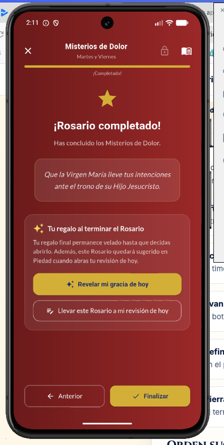
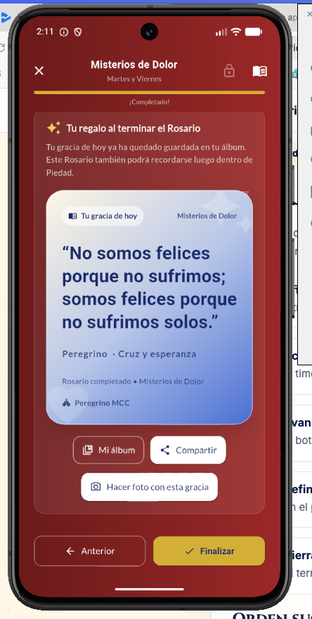
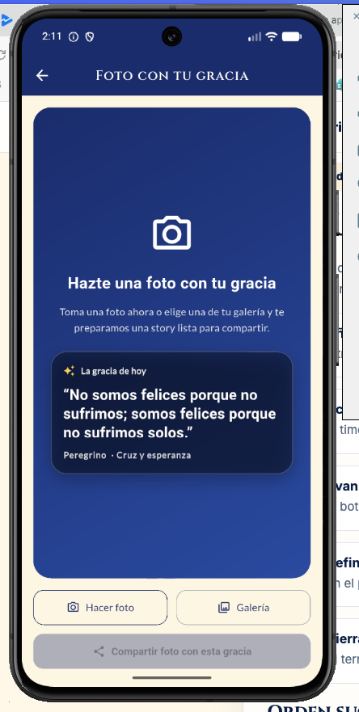

Y eso no es postureo. Es testimonio.
Hay algo que está pasando. Ser cristiano ya no es algo que esconder. Al contrario: empieza a ser algo que muchos quieren vivir con naturalidad, sin complejos y con alegría.
La Generación Z no tiene miedo a compartir lo que cree. Comparte música. Comparte causas. Comparte pensamientos. ¿Por qué no compartir también la fe?
Con Peregrino puedes rezar el Rosario, completar una oración o vivir tu revisión… y al terminar, compartir una frase que haya tocado tu corazón.
Una imagen cuidada. Una frase potente. Un gesto sencillo. Eso puede ser una semilla en el feed de alguien que lo necesita.



No tienes que escribir discursos largos. No tienes que convencer a nadie. Solo vivir tu fe… y dejar que se note.
En un momento donde viene el Papa a España y hay una ola de fervor creciente, compartir algo auténtico puede ser más fuerte que cualquier campaña.
Porque no somos felices porque no sufrimos; somos felices porque no sufrimos solos.
Y eso merece ser contado.